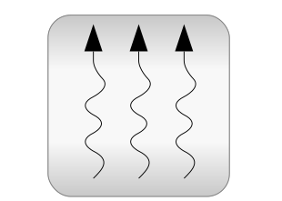

.
Modelica
.
Thermal
Information
This package contains libraries to model heat transfer and fluid heat flow.
Contents
Name
Description
FluidHeatFlow
Simple components for 1-dimensional incompressible thermo-fluid flow models
HeatTransfer
Library of 1-dimensional heat transfer with lumped elements
Generated at 2014-02-11T19:03:12Z by
OpenModelica
1.9.1+dev (r19045) (RML version)